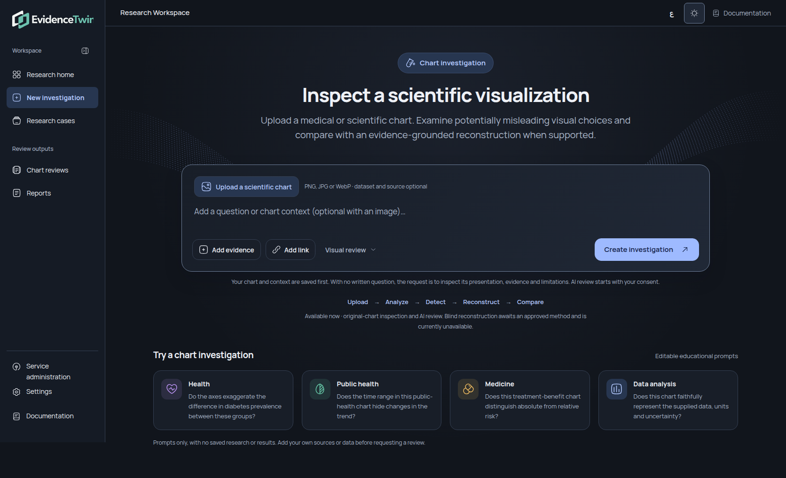
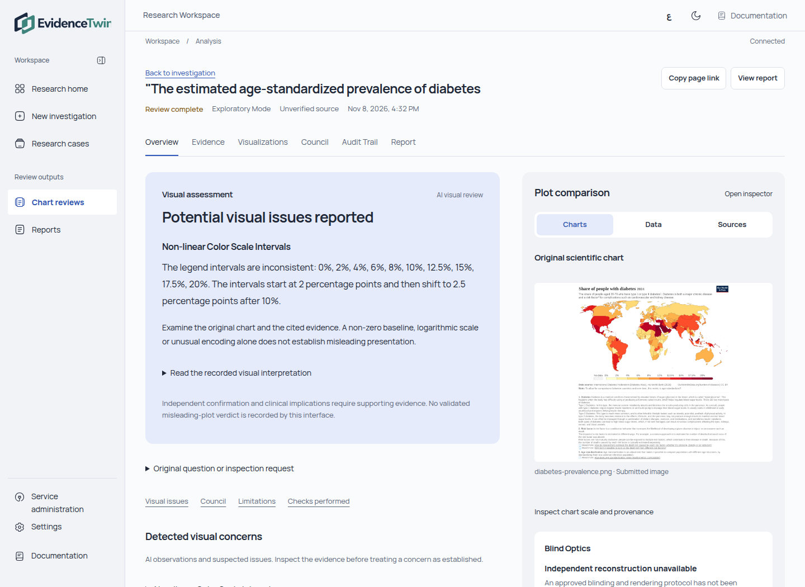
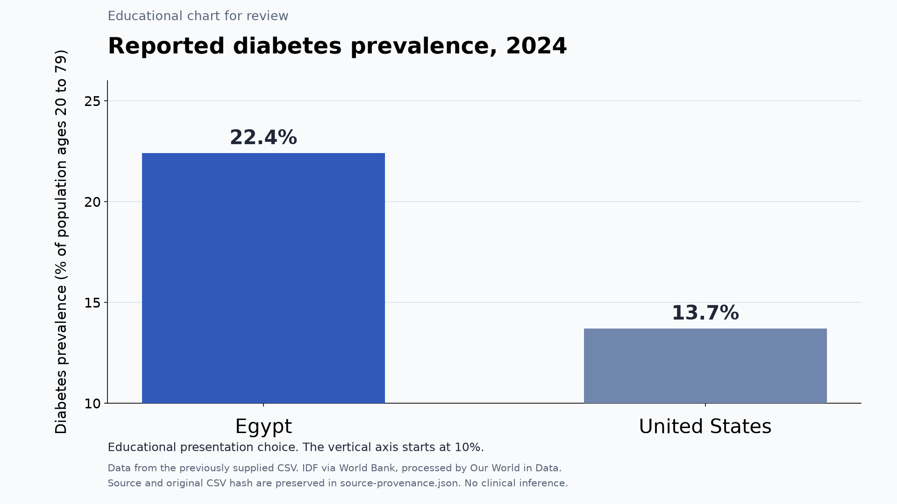

Scientific visualization inspection
Healthcare, medicine and public health
Team update · 8 November 2026
The original chart is the starting point.
We examine presentation choices that could affect scientific interpretation.
Initial emphasis covers healthcare and public-health research.
Claims, sources and calculations support the visual investigation.

Chart upload leads the page.
A question becomes optional with an image.
Evidence, source links and preferences stay together.
Create investigation saves a real case.

The original plot stays beside its visual review.
Recorded AI concerns include their evidence.
Claims and numerical checks remain accessible.
Saved exploratory review shown in an isolated copy for interface demonstration.
Original files, hashes and immutable revisions
Bounded CSV and structured JSON inspection
Scrapling extraction and public YouTube captions when accessible
Real execution records and audit history
Browser printing with complete preserved records
English and Arabic machine translation with protected numbers and references

Upload the educational chart and its CSV.
Paste the supplied English prompt.
Examine the 10% axis baseline and exact values.
Inspect the reconstruction availability message.
Educational chart using preserved supplied observations. No EvidenceTwin reconstruction or scientific validation is claimed.
Build and lint passed
57 frontend checks passed
62 focused backend checks passed
An isolated image-only save retained the original bytes and hash
Final owner acceptance remains pending
AI visual findings require evidence and independent confirmation.
Blind Optics reconstruction remains unavailable.
Source authenticity and inferential statistics remain unvalidated.
XLSX needs explicit sheet and formula handling rules.
A non-zero baseline or logarithmic scale can be appropriate.
Preserve the original chart and numerical data
Record evidence-linked visual observations
Explain suspected issues and uncertainty
Render independently from data under an approved blind protocol
Inspect differences in axes, units, encoding and interpretation
Agree on the Blind Optics protocol and acceptance criteria
Select a bounded healthcare chart evaluation set
Define reproducible rendering templates and data prerequisites
Complete the owner’s manual workflow acceptance
Confirm controlled-pilot access and deployment requirements